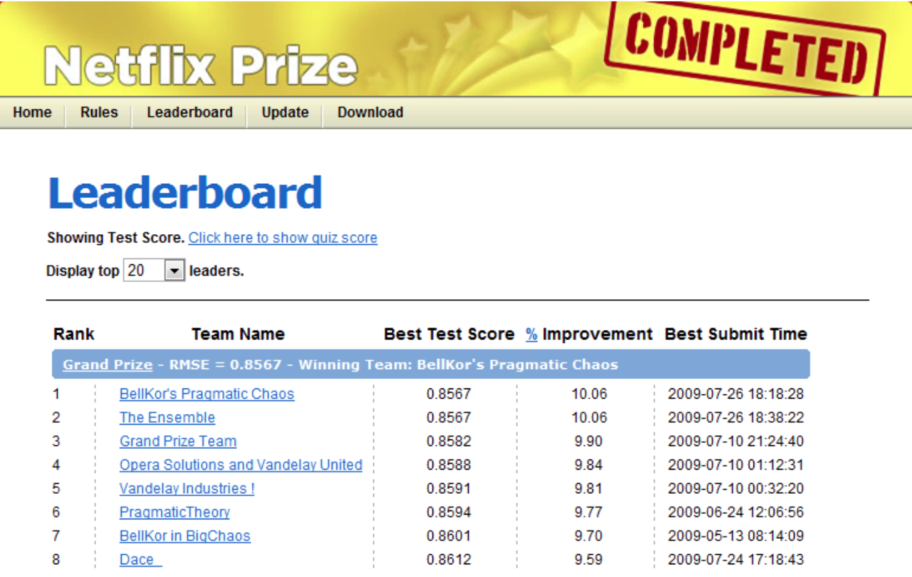
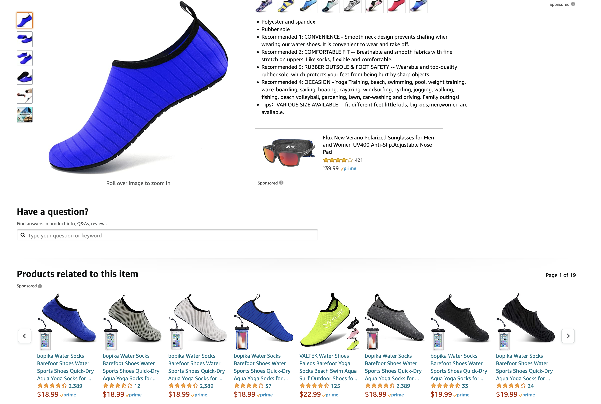

import os
import random
import sys
import time
import numpy as np
sys.path.append(os.path.join(os.path.abspath(".."), "code"))
import matplotlib.pyplot as plt
from plotting_functions import *
from plotting_functions_unsup import *
from sklearn.decomposition import PCA
from sklearn.model_selection import cross_validate, train_test_split
from sklearn.preprocessing import StandardScaler
plt.rcParams["font.size"] = 16
import matplotlib.cm as cm
# plt.style.use("seaborn")
%matplotlib inline
pd.set_option("display.max_colwidth", 0)
---------------------------------------------------------------------------
ModuleNotFoundError Traceback (most recent call last)
Cell In[1], line 10
7 sys.path.append(os.path.join(os.path.abspath(".."), "code"))
9 import matplotlib.pyplot as plt
---> 10 from plotting_functions import *
11 from plotting_functions_unsup import *
12 from sklearn.decomposition import PCA
File ~/CS/2023-24/330/cpsc330-2023W1/lectures/code/plotting_functions.py:1
----> 1 from utils import *
2 import matplotlib.pyplot as plt
3 import mglearn
File ~/CS/2023-24/330/cpsc330-2023W1/lectures/code/utils.py:10
7 import glob
9 # visualization
---> 10 import graphviz
11 import matplotlib.pyplot as plt
12 from imageio import imread
ModuleNotFoundError: No module named 'graphviz'
Lecture 16: Recommender Systems#
UBC 2023-24
Instructor: Varada Kolhatkar and Andrew Roth
Announcements#
HW6 posted due Nov 13th
Note Monday is a holiday so TAs won’t be available
No classes or OH during the midterm break.
Questions for you#
Would you want to take a 4th year applications of ML to biology course?#
iClicker cloud join link: https://join.iclicker.com/SNBF
A) No
B) Yes, if the math reqs are like 330
C) Yes, if the biology reqs
Learning outcomes #
From this lecture, students are expected to be able to:
State the problem of recommender systems.
Describe components of a utility matrix.
Create a utility matrix given ratings data.
Describe a common approach to evaluate recommender systems.
Implement some baseline approaches to complete the utility matrix.
Explain the idea of collaborative filtering.
Explain some serious consequences of recommendation systems.
Recommender systems motivation#
What is a recommender system?#
A recommender or a recommendation system recommends a particular product or service to users they are likely to consume.
{kind=link}
❓❓ Questions for you#
iClicker cloud join link: https://join.iclicker.com/SNBF
What percentage of watch time on YouTube do you think comes from recommendations?
(A) 50%
(B) 60%
(C) 20%
(D) 90%
This source says 60%. But the statistics might have changed now.
Example: Recommender Systems#
A client goes to Amazon to buy products.
Amazon has some information about the client. They also have information about other clients buying similar products.
What should they recommend to the client, so that they buy more products?
There’s no “right” answer (no label).
The whole idea is to understand user behavior in order to recommend them products they are likely to consume.
Why should we care about recommendation systems?#
Almost everything we buy or consume today is in some way or the other influenced by recommendation systems.
Music (Spotify), videos (YouTube), news, books and products (Amazon), movies (Netflix), jokes, restaurants, dating , friends (Facebook), professional connections (Linkedin)
Recommendation systems are at the core of the success of many companies.
Amazon
An example Capstone project: QxMD#
Present personalized journal article recommendations to health care professionals.
What kind of data we need to build recommendation systems?#
User ratings data (most common)
Features related to items or users
Customer purchase history data
Main approaches#
Collaborative filtering
“Unsupervised” learning
We only have labels \(y_{ij}\) (rating of user \(i\) for item \(j\)).
We learn features.
Content-based recommenders
Supervised learning
Extract features \(x_i\) of users and/or items and building a model to predict rating \(y_i\) given \(x_i\).
Apply model to predict for new users/items.
Hybrid
Combining collaborative filtering with content-based filtering
The Netflix prize#

The Netflix prize#
100M ratings from 0.5M users on 18k movies.
Grand prize was $1M for first team to reduce squared error at least by 10%.
Winning entry (and most entries) used collaborative filtering:
Methods that only looks at ratings, not features of movies/users.
A simple collaborative filtering method that does really well:
Now adopted by many companies.
Recommender systems problem#
Problem formulation#
Most often the data for recommender systems come in as ratings for a set of items from a set of users.
We have two entities: \(N\) users and \(M\) items.
Users are consumers.
Items are the products or services offered.
E.g., movies (Netflix), books (Amazon), songs (spotify), people (tinder)
{kind=link}
Utility matrix#
A utility matrix is the matrix that captures interactions between \(N\) users and \(M\) items.
The interaction may come in different forms:
ratings, clicks, purchases
Utility matrix#
Below is a toy utility matrix. Here \(N\) = 6 and \(M\) = 5.
Each entry \(y_{ij}\) (\(i^{th}\) row and \(j^{th}\) column) denotes the rating given by the user \(i\) to item \(j\).
We represent users in terms of items and items in terms of users.
Sparsity of utility matrix#
The utility matrix is very sparse because usually users only interact with a few items.
For example:
all Netflix users will have rated only a small percentage of content available on Netflix
all amazon clients will have rated only a small fraction of items among all items available on Amazon
What do we predict?#
Given a utility matrix of \(N\) users and \(M\) items, complete the utility matrix. In other words, predict missing values in the matrix.
Example dataset: Jester 1.7M jokes ratings dataset#
We’ll use a sample of Jester 1.7M jokes ratings dataset to demonstrate different recommendation systems.
The dataset comes with two CSVs
A CSV containing ratings (-10.0 to +10.0) of 150 jokes from 59,132 users.
A CSV containing joke IDs and the actual text of jokes.
Some jokes might be offensive. Please do not look too much into the actual text data if you are sensitive to such language.
Recommendation systems are most effective when you have a large amount of data.
But we are only taking a sample here for speed.
filename = "../data/jester_ratings.csv"
ratings_full = pd.read_csv(filename)
ratings = ratings_full[ratings_full["userId"] <= 4000]
ratings.head()
| userId | jokeId | rating | |
|---|---|---|---|
| 0 | 1 | 5 | 0.219 |
| 1 | 1 | 7 | -9.281 |
| 2 | 1 | 8 | -9.281 |
| 3 | 1 | 13 | -6.781 |
| 4 | 1 | 15 | 0.875 |
user_key = "userId"
item_key = "jokeId"
Dataset stats#
ratings.info()
<class 'pandas.core.frame.DataFrame'>
Index: 141362 entries, 0 to 141361
Data columns (total 3 columns):
# Column Non-Null Count Dtype
--- ------ -------------- -----
0 userId 141362 non-null int64
1 jokeId 141362 non-null int64
2 rating 141362 non-null float64
dtypes: float64(1), int64(2)
memory usage: 4.3 MB
def get_stats(ratings, item_key="jokeId", user_key="userId"):
print("Number of ratings:", len(ratings))
print("Average rating: %0.3f" % (np.mean(ratings["rating"])))
N = len(np.unique(ratings[user_key]))
M = len(np.unique(ratings[item_key]))
print("Number of users (N): %d" % N)
print("Number of items (M): %d" % M)
print("Fraction non-nan ratings: %0.3f" % (len(ratings) / (N * M)))
return N, M
N, M = get_stats(ratings)
Number of ratings: 141362
Average rating: 1.200
Number of users (N): 3635
Number of items (M): 140
Fraction non-nan ratings: 0.278
Creating utility matrix#
Let’s construct utility matrix with
number of usersrows andnumber of itemscolumns from the ratings data.
Note we are constructing a non-sparse matrix for demonstration purpose here. In real life it’s recommended that you work with sparse matrices.
user_mapper = dict(zip(np.unique(ratings[user_key]), list(range(N))))
item_mapper = dict(zip(np.unique(ratings[item_key]), list(range(M))))
user_inverse_mapper = dict(zip(list(range(N)), np.unique(ratings[user_key])))
item_inverse_mapper = dict(zip(list(range(M)), np.unique(ratings[item_key])))
def create_Y_from_ratings(
data, N, M, user_mapper, item_mapper, user_key="userId", item_key="jokeId"
): # Function to create a dense utility matrix
Y = np.zeros((N, M))
Y.fill(np.nan)
for index, val in data.iterrows():
n = user_mapper[val[user_key]]
m = item_mapper[val[item_key]]
Y[n, m] = val["rating"]
return Y
Utility matrix for the example problem#
Rows represent users.
Columns represent items (jokes in our case).
Each cell gives the rating given by the user to the corresponding joke.
Users are features for jokes and jokes are features for users.
We want to predict the missing entries.
Y_mat = create_Y_from_ratings(ratings, N, M, user_mapper, item_mapper)
Y_mat.shape
(3635, 140)
pd.DataFrame(Y_mat)
| 0 | 1 | 2 | 3 | 4 | 5 | 6 | 7 | 8 | 9 | ... | 130 | 131 | 132 | 133 | 134 | 135 | 136 | 137 | 138 | 139 | |
|---|---|---|---|---|---|---|---|---|---|---|---|---|---|---|---|---|---|---|---|---|---|
| 0 | 0.219 | -9.281 | -9.281 | -6.781 | 0.875 | -9.656 | -9.031 | -7.469 | -8.719 | -9.156 | ... | NaN | NaN | NaN | NaN | NaN | NaN | NaN | NaN | NaN | NaN |
| 1 | -9.688 | 9.938 | 9.531 | 9.938 | 0.406 | 3.719 | 9.656 | -2.688 | -9.562 | -9.125 | ... | NaN | NaN | NaN | NaN | NaN | NaN | NaN | NaN | NaN | NaN |
| 2 | -9.844 | -9.844 | -7.219 | -2.031 | -9.938 | -9.969 | -9.875 | -9.812 | -9.781 | -6.844 | ... | NaN | NaN | NaN | NaN | NaN | NaN | NaN | NaN | NaN | NaN |
| 3 | -5.812 | -4.500 | -4.906 | NaN | NaN | NaN | NaN | NaN | NaN | NaN | ... | NaN | NaN | NaN | NaN | NaN | NaN | NaN | NaN | NaN | NaN |
| 4 | 6.906 | 4.750 | -5.906 | -0.406 | -4.031 | 3.875 | 6.219 | 5.656 | 6.094 | 5.406 | ... | NaN | NaN | NaN | NaN | NaN | NaN | NaN | NaN | NaN | NaN |
| ... | ... | ... | ... | ... | ... | ... | ... | ... | ... | ... | ... | ... | ... | ... | ... | ... | ... | ... | ... | ... | ... |
| 3630 | NaN | -9.812 | -0.062 | NaN | NaN | NaN | NaN | NaN | NaN | NaN | ... | NaN | NaN | NaN | NaN | NaN | NaN | NaN | NaN | NaN | NaN |
| 3631 | NaN | -9.844 | 7.531 | -9.719 | -9.344 | 3.875 | 9.812 | 8.938 | 8.375 | NaN | ... | NaN | NaN | NaN | NaN | NaN | NaN | NaN | NaN | NaN | NaN |
| 3632 | NaN | -1.906 | 3.969 | -2.312 | -0.344 | -8.844 | 4.188 | NaN | NaN | NaN | ... | NaN | NaN | NaN | NaN | NaN | NaN | NaN | NaN | NaN | NaN |
| 3633 | NaN | -8.875 | -9.156 | -9.156 | NaN | NaN | NaN | NaN | NaN | NaN | ... | NaN | NaN | NaN | NaN | NaN | NaN | NaN | NaN | NaN | NaN |
| 3634 | NaN | -6.312 | 1.281 | -3.531 | 2.125 | -5.812 | 5.562 | -6.062 | 0.125 | NaN | ... | NaN | NaN | 4.188 | NaN | NaN | NaN | NaN | NaN | NaN | NaN |
3635 rows × 140 columns
Baseline Approaches#
Recall that our goal is to predict missing entries in the utility matrix.
Evaluation#
We’ll try a number of methods to do this.
Although there is no notion of “accurate” recommendations, we need a way to evaluate our predictions so that we’ll be able to compare different methods.
Although we are doing unsupervised learning, we’ll split the data and evaluate our predictions as follows.
Data splitting#
We split the ratings into train and validation sets.
It’s easier to split the ratings data instead of splitting the utility matrix.
Don’t worry about
y; we’re not really going to use it.
X = ratings.copy()
y = ratings[user_key]
X_train, X_valid, y_train, y_valid = train_test_split(
X, y, test_size=0.2, random_state=42
)
X_train.shape, X_valid.shape
((113089, 3), (28273, 3))
train_mat = create_Y_from_ratings(X_train, N, M, user_mapper, item_mapper)
valid_mat = create_Y_from_ratings(X_valid, N, M, user_mapper, item_mapper)
train_mat.shape, valid_mat.shape
((3635, 140), (3635, 140))
train_mathas only ratings from the train set andvalid_mathas only ratings from the valid set.During training we assume that we do not have access to some of the available ratings. We predict these ratings and evaluate them against ratings in the validation set.
Questions for you#
How do train and validation utility matrices differ?
Why are utility matrices for train and validation sets are of the same shape?
Answer:
The training matrix
train_matis of shape N by M but only has ratings fromX_trainand all other ratings missing.The validation matrix
valid_matis also of shape N by M but it only has ratingsX_validand all other ratings missing.They have the same shape because both have the same number of users and items; that’s how we have constructed them.
Evaluation#
Now that we have train and validation sets, how do we evaluate our predictions?
You can calculate the error between actual ratings and predicted ratings with metrics of your choice.
Most common ones are MSE or RMSE.
def error(X1, X2):
"""
Returns the root mean squared error.
"""
return np.sqrt(np.nanmean((X1 - X2) ** 2))
def evaluate(pred_X, train_X, valid_X, model_name="Global average"):
print("%s train RMSE: %0.2f" % (model_name, error(pred_X, train_X)))
print("%s valid RMSE: %0.2f" % (model_name, error(pred_X, valid_X)))
Baselines#
Let’s first try some simple approaches to predict missing entries.
Global average baseline
Global average baseline#
Let’s examine RMSE of the global average baseline.
In this baseline we predict everything as the global average rating
avg = np.nanmean(train_mat)
pred_g = np.zeros(train_mat.shape) + avg
pd.DataFrame(pred_g).head()
| 0 | 1 | 2 | 3 | 4 | 5 | 6 | 7 | 8 | 9 | ... | 130 | 131 | 132 | 133 | 134 | 135 | 136 | 137 | 138 | 139 | |
|---|---|---|---|---|---|---|---|---|---|---|---|---|---|---|---|---|---|---|---|---|---|
| 0 | 1.20741 | 1.20741 | 1.20741 | 1.20741 | 1.20741 | 1.20741 | 1.20741 | 1.20741 | 1.20741 | 1.20741 | ... | 1.20741 | 1.20741 | 1.20741 | 1.20741 | 1.20741 | 1.20741 | 1.20741 | 1.20741 | 1.20741 | 1.20741 |
| 1 | 1.20741 | 1.20741 | 1.20741 | 1.20741 | 1.20741 | 1.20741 | 1.20741 | 1.20741 | 1.20741 | 1.20741 | ... | 1.20741 | 1.20741 | 1.20741 | 1.20741 | 1.20741 | 1.20741 | 1.20741 | 1.20741 | 1.20741 | 1.20741 |
| 2 | 1.20741 | 1.20741 | 1.20741 | 1.20741 | 1.20741 | 1.20741 | 1.20741 | 1.20741 | 1.20741 | 1.20741 | ... | 1.20741 | 1.20741 | 1.20741 | 1.20741 | 1.20741 | 1.20741 | 1.20741 | 1.20741 | 1.20741 | 1.20741 |
| 3 | 1.20741 | 1.20741 | 1.20741 | 1.20741 | 1.20741 | 1.20741 | 1.20741 | 1.20741 | 1.20741 | 1.20741 | ... | 1.20741 | 1.20741 | 1.20741 | 1.20741 | 1.20741 | 1.20741 | 1.20741 | 1.20741 | 1.20741 | 1.20741 |
| 4 | 1.20741 | 1.20741 | 1.20741 | 1.20741 | 1.20741 | 1.20741 | 1.20741 | 1.20741 | 1.20741 | 1.20741 | ... | 1.20741 | 1.20741 | 1.20741 | 1.20741 | 1.20741 | 1.20741 | 1.20741 | 1.20741 | 1.20741 | 1.20741 |
5 rows × 140 columns
evaluate(pred_g, train_mat, valid_mat, model_name="Global average")
Global average train RMSE: 5.75
Global average valid RMSE: 5.77
\(k\)-nearest neighbours imputation#
Can we try \(k\)-nearest neighbours type imputation?
Impute missing values using the mean value from \(k\) nearest neighbours found in the training set.
Calculate distances between examples using features where neither value is missing.

from sklearn.impute import KNNImputer
imputer = KNNImputer(n_neighbors=10)
train_mat_imp = imputer.fit_transform(train_mat)
pd.DataFrame(train_mat_imp)
| 0 | 1 | 2 | 3 | 4 | 5 | 6 | 7 | 8 | 9 | ... | 130 | 131 | 132 | 133 | 134 | 135 | 136 | 137 | 138 | 139 | |
|---|---|---|---|---|---|---|---|---|---|---|---|---|---|---|---|---|---|---|---|---|---|
| 0 | -5.9406 | -9.2810 | -9.2810 | -6.7810 | 0.8750 | -9.6560 | -9.0310 | -7.4690 | -8.7190 | -9.1560 | ... | -4.5311 | 1.8968 | 0.6905 | -3.1218 | 1.2843 | -2.6063 | -0.1812 | -1.3937 | 1.7625 | -0.4092 |
| 1 | 2.3405 | 9.9380 | 9.5310 | 9.9380 | 0.4060 | 3.7190 | 9.6560 | -2.6880 | 4.3438 | -9.1250 | ... | 2.2437 | 3.1719 | 5.0251 | 5.1812 | 8.2407 | 5.9311 | 5.8375 | 6.3812 | 1.1687 | 6.2532 |
| 2 | -9.8440 | -3.5750 | -7.2190 | -2.0310 | -9.9380 | -9.9690 | -9.8750 | -9.8120 | -9.7810 | -6.8440 | ... | -4.4186 | -3.1156 | -1.5655 | -5.6250 | 0.3720 | -4.0439 | -6.0500 | -5.5563 | -5.4125 | -5.5874 |
| 3 | -5.8120 | -2.4624 | -4.9060 | -2.7781 | -0.0532 | -3.8594 | 1.7031 | -0.3687 | 1.8469 | 0.0593 | ... | -2.0344 | 2.1469 | 2.8875 | 1.6845 | 1.2437 | -0.0156 | 1.2595 | 3.8219 | 3.1971 | 5.0249 |
| 4 | 1.3157 | 4.7500 | 1.8658 | -0.4060 | 1.7937 | 3.8750 | 6.2190 | 1.9220 | 6.0940 | 5.4060 | ... | -0.2844 | 1.1313 | 4.0157 | 3.0344 | 4.0406 | 0.5218 | 4.3594 | 4.0968 | 3.9250 | 3.9657 |
| ... | ... | ... | ... | ... | ... | ... | ... | ... | ... | ... | ... | ... | ... | ... | ... | ... | ... | ... | ... | ... | ... |
| 3630 | -0.7750 | -9.8120 | -0.0620 | -2.8218 | -4.1470 | -4.8281 | 2.2718 | -2.8782 | -1.0125 | 0.0688 | ... | -6.6844 | 3.0531 | 2.8687 | 1.5281 | 4.5002 | -0.1878 | 2.0031 | 4.0908 | 2.3563 | 5.0406 |
| 3631 | 2.5188 | -5.0625 | -0.4001 | -9.7190 | -9.3440 | -1.6408 | -4.1187 | 8.9380 | 8.3750 | -0.9314 | ... | -4.0344 | 7.9155 | 3.4282 | 4.2968 | 6.7968 | 7.3999 | 1.8500 | 5.8219 | 5.1812 | 2.8437 |
| 3632 | 0.1749 | -1.9060 | 3.9690 | -1.3844 | -0.3440 | -8.8440 | 4.1880 | -1.5564 | 5.0593 | 0.3343 | ... | -4.0126 | 2.8344 | 2.4499 | 2.9312 | 2.3750 | -0.4062 | 1.4375 | 3.9750 | -1.2220 | 2.8375 |
| 3633 | -4.5937 | -6.4907 | -6.1594 | -9.1560 | -7.1437 | -6.5406 | 3.8718 | -1.7782 | -3.7406 | -0.6406 | ... | -4.6938 | 4.8061 | 4.9968 | -0.1626 | 2.4187 | -0.7750 | 4.6781 | 1.7658 | 0.4595 | 0.1843 |
| 3634 | -0.0812 | -6.3120 | 1.2810 | -3.5310 | 2.1250 | -5.8120 | 5.5620 | 0.2218 | 0.1250 | -1.1874 | ... | -3.8156 | 4.1812 | 4.1880 | 3.7280 | 3.0750 | 2.1033 | 2.8156 | 5.5312 | 3.8283 | 4.1219 |
3635 rows × 140 columns
evaluate(train_mat_imp, train_mat, valid_mat, model_name="KNN imputer")
KNN imputer train RMSE: 0.00
KNN imputer valid RMSE: 4.79
Question
Instead of imputation, what would be the consequences if we replace
nanwith zeros so that we can calculate distances between vectors?
Answer
It’s not a good idea replace ratings with 0, because 0 can be an actual rating value in our case.
What to do with predictions?#
Once you have predictions, you can sort them based on ratings and recommend items with highest ratings.
Break (5 min)#

Collaborative filtering#
One of the most popular approach for recommendation systems.
Approach used by the winning entry (and most of the entries) in the Netflix competition.
An unsupervised approach
Only uses the user-item interactions given in the ratings matrix.
Intuition
We may have similar users and similar items which can help us predict missing entries.
Leverage social information to provide recommendations.
Problem#
Given a utility matrix with many missing entries, how can we predict missing ratings?
Note: rating prediction \(\neq\) Classification or regression
Classification or regression#
We have \(X\) and targets for some rows in \(X\).
We want to predict the last column (target column).
Rating prediction#
Ratings data has many missing values in the utility matrix. There is no special target column. We want to predict the missing entries in the matrix.
Since our goal is to predict ratings, usually the utility matrix is referred to as \(Y\) matrix.
We don’t have sufficient background to understand how collaborative filtering works under-the-hood.
Let’s look at an example to understand this at a high level.
toy_ratings = pd.read_csv("../data/toy-movie-ratings.csv")
toy_ratings.head(n=5)
| user_id | movie_id | rating | |
|---|---|---|---|
| 0 | Sam | Lion King | 5 |
| 1 | Sam | Toy Story | 4 |
| 2 | Sam | The Little Mermaid | 5 |
| 3 | Sam | Bambi | 5 |
| 4 | Sam | The Social Dilemma | 1 |
N_toy = len(np.unique(toy_ratings["user_id"]))
M_toy = len(np.unique(toy_ratings["movie_id"]))
print("Number of users (N) : %d" % N_toy)
print("Number of movies (M) : %d" % M_toy)
Number of users (N) : 4
Number of movies (M) : 7
user_mapper_toy = dict(zip(np.unique(toy_ratings["user_id"]), list(range(N_toy))))
item_mapper_toy = dict(zip(np.unique(toy_ratings["movie_id"]), list(range(M_toy))))
user_inverse_mapper_toy = dict(
zip(list(range(N_toy)), np.unique(toy_ratings["user_id"]))
)
item_inverse_mapper_toy = dict(
zip(list(range(M_toy)), np.unique(toy_ratings["movie_id"]))
)
Y_toy = create_Y_from_ratings(
toy_ratings, N_toy, M_toy, user_mapper_toy, item_mapper_toy, user_key="user_id", item_key="movie_id"
)
utility_mat_toy = pd.DataFrame(
Y_toy, columns=item_mapper_toy.keys(), index=user_mapper_toy.keys()
)
utility_mat_toy
| Bambi | Lion King | Malcolm x | Man on Wire | The Little Mermaid | The Social Dilemma | Toy Story | |
|---|---|---|---|---|---|---|---|
| Eva | NaN | NaN | NaN | 5.0 | NaN | 5.0 | 1.0 |
| Jim | NaN | NaN | 4.0 | 5.0 | NaN | 5.0 | NaN |
| Pat | 5.0 | 5.0 | NaN | NaN | 4.0 | NaN | NaN |
| Sam | 5.0 | 5.0 | NaN | NaN | 5.0 | 1.0 | 4.0 |
In this toy example, we see clear groups of movies and users.
For movies: Children movies and documentaries
For users: Children movie lovers and documentary lovers
There are some unsupervised models which identify such latent features.
I’ll show you how to use a package which implements this popular algorithm for collaborative filtering.
Rating prediction using the surprise package#
We’ll be using a package called Surprise.
The collaborative filtering algorithm we use in this package is called
SVD.
pip install scikit-surprise
import surprise
from surprise import SVD, Dataset, Reader, accuracy
reader = Reader()
data = Dataset.load_from_df(ratings, reader) # Load the data
# I'm being sloppy here. Probably there is a way to create validset from our already split data.
trainset, validset = surprise.model_selection.train_test_split(
data, test_size=0.2, random_state=42
) # Split the data
k = 10
algo = SVD(n_factors=k, random_state=42)
algo.fit(trainset)
svd_preds = algo.test(validset)
accuracy.rmse(svd_preds, verbose=True)
RMSE: 5.2893
5.28926338380112
Not a large improvement over the global baseline (RMSE=5.77).
Probably because we are only considering a sample.
(Optional) Cross-validation for recommender systems#
We can also carry out cross-validation and grid search with this package.
Let’s look at an example of cross-validation.
from surprise.model_selection import cross_validate
pd.DataFrame(cross_validate(algo, data, measures=["RMSE", "MAE"], cv=5, verbose=True))
Evaluating RMSE, MAE of algorithm SVD on 5 split(s).
Fold 1 Fold 2 Fold 3 Fold 4 Fold 5 Mean Std
RMSE (testset) 5.2632 5.2740 5.3072 5.2933 5.2646 5.2804 0.0171
MAE (testset) 4.1755 4.1939 4.2187 4.2181 4.1770 4.1967 0.0189
Fit time 0.65 0.69 0.69 0.69 0.68 0.68 0.02
Test time 0.12 0.23 0.12 0.12 0.11 0.14 0.05
| test_rmse | test_mae | fit_time | test_time | |
|---|---|---|---|---|
| 0 | 5.263227 | 4.175461 | 0.648470 | 0.119723 |
| 1 | 5.273979 | 4.193898 | 0.690479 | 0.234411 |
| 2 | 5.307165 | 4.218716 | 0.685509 | 0.116034 |
| 3 | 5.293285 | 4.218148 | 0.686135 | 0.119938 |
| 4 | 5.264584 | 4.177027 | 0.678480 | 0.112205 |
The Jester dataset is available as one of the built-in datasets in this package and you can load it as follows and run cross-validation as follows.
data = Dataset.load_builtin("jester")
pd.DataFrame(cross_validate(algo, data, measures=["RMSE", "MAE"], cv=5, verbose=True))
Dataset jester could not be found. Do you want to download it? [Y/n]
Trying to download dataset from https://eigentaste.berkeley.edu/dataset/archive/jester_dataset_2.zip...
Done! Dataset jester has been saved to /Users/andy/.surprise_data/jester
Evaluating RMSE, MAE of algorithm SVD on 5 split(s).
Fold 1 Fold 2 Fold 3 Fold 4 Fold 5 Mean Std
RMSE (testset) 4.5777 4.5787 4.5698 4.5673 4.5829 4.5753 0.0058
MAE (testset) 3.3196 3.3274 3.3218 3.3124 3.3247 3.3212 0.0051
Fit time 7.99 9.16 9.37 8.52 9.20 8.85 0.52
Test time 3.12 3.03 3.03 3.44 3.38 3.20 0.17
| test_rmse | test_mae | fit_time | test_time | |
|---|---|---|---|---|
| 0 | 4.577692 | 3.319554 | 7.990808 | 3.122256 |
| 1 | 4.578666 | 3.327421 | 9.161996 | 3.026334 |
| 2 | 4.569781 | 3.321780 | 9.366242 | 3.029095 |
| 3 | 4.567327 | 3.312407 | 8.523125 | 3.435463 |
| 4 | 4.582858 | 3.324705 | 9.199505 | 3.375153 |
Content-based filtering#
What is content-based filtering?#
Supervised machine learning approach
In collaborative filtering we assumed that we only have ratings data.
Usually there is some information on items and users available.
Examples
Netflix can describe movies as action, romance, comedy, documentaries.
Amazon could describe books according to topics: math, languages, history.
Tinder could describe people according to age, location, employment.
Can we use this information to predict ratings in the utility matrix?
Yes!
Toy example: Movie recommendation#
Let’s consider movie recommendation problem with the following toy data.
Ratings data#
toy_ratings = pd.read_csv("../data/toy_ratings.csv")
toy_ratings.head(n=5)
| user_id | movie_id | rating | |
|---|---|---|---|
| 0 | Sam | Lion King | 4 |
| 1 | Sam | Jerry Maguire | 4 |
| 2 | Sam | Roman Holidays | 5 |
| 3 | Sam | Downfall | 1 |
| 4 | Eva | Titanic | 2 |
N = len(np.unique(toy_ratings["user_id"]))
M = len(np.unique(toy_ratings["movie_id"]))
print("Number of users (N) : %d" % N)
print("Number of movies (M) : %d" % M)
Number of users (N) : 4
Number of movies (M) : 12
user_key = "user_id"
item_key = "movie_id"
user_mapper = dict(zip(np.unique(toy_ratings[user_key]), list(range(N))))
item_mapper = dict(zip(np.unique(toy_ratings[item_key]), list(range(M))))
user_inverse_mapper = dict(zip(list(range(N)), np.unique(toy_ratings[user_key])))
item_inverse_mapper = dict(zip(list(range(M)), np.unique(toy_ratings[item_key])))
def create_Y_from_ratings(data, N, M):
Y = np.zeros((N, M))
Y.fill(np.nan)
for index, val in data.iterrows():
n = user_mapper[val[user_key]]
m = item_mapper[val[item_key]]
Y[n, m] = val["rating"]
return Y
Utility matrix#
Y = create_Y_from_ratings(toy_ratings, N, M)
utility_mat = pd.DataFrame(Y, columns=item_mapper.keys(), index=user_mapper.keys())
utility_mat
| A Beautiful Mind | Bambi | Cast Away | Downfall | Inception | Jerry Maguire | Lion King | Malcolm x | Man on Wire | Roman Holidays | The Social Dilemma | Titanic | |
|---|---|---|---|---|---|---|---|---|---|---|---|---|
| Eva | NaN | NaN | NaN | NaN | 4.0 | 1.0 | NaN | NaN | 5.0 | NaN | 5.0 | 2.0 |
| Jim | NaN | NaN | NaN | NaN | NaN | NaN | 3.0 | 4.0 | 5.0 | NaN | 5.0 | 2.0 |
| Pat | 3.0 | 4.0 | 3.0 | 2.0 | NaN | 5.0 | 4.0 | NaN | NaN | NaN | NaN | 3.0 |
| Sam | NaN | NaN | NaN | 1.0 | NaN | 4.0 | 4.0 | NaN | NaN | 5.0 | NaN | NaN |
np.nanmean(Y)
3.5238095238095237
reader = Reader()
data = Dataset.load_from_df(toy_ratings, reader) # Load the data
trainset, validset = surprise.model_selection.train_test_split(
data, test_size=0.01, random_state=42
) # Split the data
k = 2
algo = SVD(n_factors=k, random_state=42)
algo.fit(trainset)
preds = algo.test(trainset.build_testset())
from collections import defaultdict
rating_preds = defaultdict(list)
for uid, iid, true_r, est, _ in preds:
rating_preds[uid].append((iid, est))
rating_preds
defaultdict(list,
{'Sam': [('Lion King', 3.5442874862516582),
('Jerry Maguire', 3.471958396420975),
('Downfall', 3.141157981632877),
('Roman Holidays', 3.6555436348053982)],
'Jim': [('Lion King', 3.6494404051925047),
('The Social Dilemma', 3.8739407581035588),
('Titanic', 3.295718235231984),
('Man on Wire', 3.8839492577938532),
('Malcolm x', 3.6435176323135128)],
'Pat': [('A Beautiful Mind', 3.4463313322323263),
('Bambi', 3.540418795140043),
('Jerry Maguire', 3.4582870107738803),
('Titanic', 3.1872411557123517),
('Cast Away', 3.4442142132704827),
('Lion King', 3.5286392016604875),
('Downfall', 3.133747883605952)],
'Eva': [('The Social Dilemma', 3.6665140635371194),
('Jerry Maguire', 3.3423360343482957),
('Titanic', 3.113324069881786),
('Man on Wire', 3.685575559931666)]})
Movie features#
Suppose we also have movie features.
movie_feats_df = pd.read_csv("../data/toy_movie_feats.csv", index_col=0)
movie_feats_df.head(n=8)
| Action | Romance | Drama | Comedy | Children | Documentary | |
|---|---|---|---|---|---|---|
| A Beautiful Mind | 0 | 1 | 1 | 0 | 0 | 0 |
| Bambi | 0 | 0 | 1 | 0 | 1 | 0 |
| Cast Away | 0 | 1 | 1 | 0 | 0 | 0 |
| Downfall | 0 | 0 | 0 | 0 | 0 | 1 |
| Inception | 1 | 0 | 1 | 0 | 0 | 0 |
| Jerry Maguire | 0 | 1 | 1 | 1 | 0 | 0 |
| Lion King | 0 | 0 | 1 | 0 | 1 | 0 |
| Malcolm x | 0 | 0 | 0 | 0 | 0 | 1 |
How can we use these features to predict missing ratings?#
Overall idea#
Using the ratings data and movie features, we’ll build profiles for different users.
Let’s consider an example user Pat.
Pat’s ratings#
We don’t know anything about Pat but we know her ratings to movies.
utility_mat.loc[["Pat"]]
| A Beautiful Mind | Bambi | Cast Away | Downfall | Inception | Jerry Maguire | Lion King | Malcolm x | Man on Wire | Roman Holidays | The Social Dilemma | Titanic | |
|---|---|---|---|---|---|---|---|---|---|---|---|---|
| Pat | 3.0 | 4.0 | 3.0 | 2.0 | NaN | 5.0 | 4.0 | NaN | NaN | NaN | NaN | 3.0 |
We also know about movies and their features.
If Pat gave a high rating to Lion King, it means that she liked the features of the movie.
movie_feats_df.loc[["Lion King"]]
| Action | Romance | Drama | Comedy | Children | Documentary | |
|---|---|---|---|---|---|---|
| Lion King | 0 | 0 | 1 | 0 | 1 | 0 |
Supervised approach to rating prediction#
We treat ratings prediction problem as a set of regression problems.
Given movie information, we create user profile for each user.
Build regression model for each user and learn regression weights for each user.
We build a profile for users based on
the movies they have watched
their rating for the movies
the features of the movies
We train a personalized regression model for each user using this information.
For each user \(i\) create a user profile as follows.
Consider all movies rated by \(i\) and create
Xandyfor the user:Each row in
Xcontains the movie features of movie \(j\) rated by \(i\).Each value in
yis the corresponding rating given to the movie \(j\) by user \(i\).
Fit a regression model using
Xandy.Apply the model to predict ratings for new items!
Let’s build user profiles#
Build
Xandyfor all users.
Z = movie_feats_df.to_numpy()
from collections import defaultdict
def get_lr_data_per_user(ratings_df, d):
lr_y = defaultdict(list)
lr_X = defaultdict(list)
lr_items = defaultdict(list)
for index, val in ratings_df.iterrows():
n = user_mapper[val[user_key]]
m = item_mapper[val[item_key]]
lr_X[n].append(Z[m])
lr_y[n].append(val["rating"])
lr_items[n].append(m)
for n in lr_X:
lr_X[n] = np.array(lr_X[n])
lr_y[n] = np.array(lr_y[n])
return lr_X, lr_y, lr_items
d = movie_feats_df.shape[1]
X_train_usr, y_train_usr, rated_items = get_lr_data_per_user(toy_ratings, d)
X_train_usr
defaultdict(list,
{3: array([[0, 0, 1, 0, 1, 0],
[0, 1, 1, 1, 0, 0],
[0, 1, 1, 1, 0, 0],
[0, 0, 0, 0, 0, 1]]),
0: array([[0, 1, 1, 0, 0, 0],
[0, 1, 1, 1, 0, 0],
[1, 0, 1, 0, 0, 0],
[0, 0, 0, 0, 0, 1],
[0, 0, 0, 0, 0, 1]]),
2: array([[0, 1, 1, 0, 0, 0],
[0, 0, 1, 0, 1, 0],
[0, 0, 1, 0, 1, 0],
[0, 1, 1, 0, 0, 0],
[0, 1, 1, 1, 0, 0],
[0, 0, 0, 0, 0, 1],
[0, 1, 1, 0, 0, 0]]),
1: array([[0, 1, 1, 0, 0, 0],
[0, 0, 1, 0, 1, 0],
[0, 0, 0, 0, 0, 1],
[0, 0, 0, 0, 0, 1],
[0, 0, 0, 0, 0, 1]])})
Examine user profiles#
Let’s examine some user profiles.
def get_user_profile(user_name):
X = X_train_usr[user_mapper[user_name]]
y = y_train_usr[user_mapper[user_name]]
items = rated_items[user_mapper[user_name]]
movie_names = [item_inverse_mapper[item] for item in items]
print("Profile for user: ", user_name)
profile_df = pd.DataFrame(X, columns=movie_feats_df.columns, index=movie_names)
profile_df["ratings"] = y
return profile_df
Pat’s profile#
Pat seems to like Children’s movies and movies with Comedy.
Seems like she’s as interested in romantic movies.
get_user_profile("Pat")
Profile for user: Pat
| Action | Romance | Drama | Comedy | Children | Documentary | ratings | |
|---|---|---|---|---|---|---|---|
| Titanic | 0 | 1 | 1 | 0 | 0 | 0 | 3 |
| Lion King | 0 | 0 | 1 | 0 | 1 | 0 | 4 |
| Bambi | 0 | 0 | 1 | 0 | 1 | 0 | 4 |
| Cast Away | 0 | 1 | 1 | 0 | 0 | 0 | 3 |
| Jerry Maguire | 0 | 1 | 1 | 1 | 0 | 0 | 5 |
| Downfall | 0 | 0 | 0 | 0 | 0 | 1 | 2 |
| A Beautiful Mind | 0 | 1 | 1 | 0 | 0 | 0 | 3 |
Eva’s profile#
Eva hasn’t rated many movies. There are not many rows.
Eva seems to like documentaries and action movies.
Seems like she’s interested in romantic movies.
get_user_profile("Eva")
Profile for user: Eva
| Action | Romance | Drama | Comedy | Children | Documentary | ratings | |
|---|---|---|---|---|---|---|---|
| Titanic | 0 | 1 | 1 | 0 | 0 | 0 | 2 |
| Jerry Maguire | 0 | 1 | 1 | 1 | 0 | 0 | 1 |
| Inception | 1 | 0 | 1 | 0 | 0 | 0 | 4 |
| Man on Wire | 0 | 0 | 0 | 0 | 0 | 1 | 5 |
| The Social Dilemma | 0 | 0 | 0 | 0 | 0 | 1 | 5 |
Regression models for users#
from sklearn.linear_model import Ridge
def train_for_usr(user_name, model=Ridge()):
X = X_train_usr[user_mapper[user_name]]
y = y_train_usr[user_mapper[user_name]]
model.fit(X, y)
return model
def predict_for_usr(model, movie_names):
feat_vecs = movie_feats_df.loc[movie_names].values
preds = model.predict(feat_vecs)
return preds
Regression model for Pat#
What are the regression weights learned for Pat?
user_name = "Pat"
pat_model = train_for_usr(user_name)
col = "Coefficients for %s" % user_name
pd.DataFrame(pat_model.coef_, index=movie_feats_df.columns, columns=[col])
| Coefficients for Pat | |
|---|---|
| Action | 0.000000 |
| Romance | -0.020833 |
| Drama | 0.437500 |
| Comedy | 0.854167 |
| Children | 0.458333 |
| Documentary | -0.437500 |
Predictions for Pat#
How would Pat rate some movies she hasn’t seen?
movies_to_pred = ["Roman Holidays", "Malcolm x"]
pred_df = movie_feats_df.loc[movies_to_pred]
pred_df
| Action | Romance | Drama | Comedy | Children | Documentary | |
|---|---|---|---|---|---|---|
| Roman Holidays | 0 | 1 | 1 | 1 | 0 | 0 |
| Malcolm x | 0 | 0 | 0 | 0 | 0 | 1 |
user_name = "Pat"
preds = predict_for_usr(pat_model, movies_to_pred)
pred_df[user_name + "'s predicted ratings"] = preds
pred_df
| Action | Romance | Drama | Comedy | Children | Documentary | Pat's predicted ratings | |
|---|---|---|---|---|---|---|---|
| Roman Holidays | 0 | 1 | 1 | 1 | 0 | 0 | 4.145833 |
| Malcolm x | 0 | 0 | 0 | 0 | 0 | 1 | 2.437500 |
Regression model for Eva#
What are the regression weights learned for Eva?
user_name = "Eva"
eva_model = train_for_usr(user_name)
col = "Coefficients for %s" % user_name
pd.DataFrame(eva_model.coef_, index=movie_feats_df.columns, columns=[col])
| Coefficients for Eva | |
|---|---|
| Action | 0.333333 |
| Romance | -1.000000 |
| Drama | -0.666667 |
| Comedy | -0.666667 |
| Children | 0.000000 |
| Documentary | 0.666667 |
Predictions for Eva#
user_name = "Eva"
preds = predict_for_usr(eva_model, movies_to_pred)
pred_df[user_name + "'s predicted ratings"] = preds
pred_df
| Action | Romance | Drama | Comedy | Children | Documentary | Pat's predicted ratings | Eva's predicted ratings | |
|---|---|---|---|---|---|---|---|---|
| Roman Holidays | 0 | 1 | 1 | 1 | 0 | 0 | 4.145833 | 1.666667 |
| Malcolm x | 0 | 0 | 0 | 0 | 0 | 1 | 2.437500 | 4.666667 |
Completing the utility matrix with content-based filtering#
Here is the original utility matrix.
utility_mat
| A Beautiful Mind | Bambi | Cast Away | Downfall | Inception | Jerry Maguire | Lion King | Malcolm x | Man on Wire | Roman Holidays | The Social Dilemma | Titanic | |
|---|---|---|---|---|---|---|---|---|---|---|---|---|
| Eva | NaN | NaN | NaN | NaN | 4.0 | 1.0 | NaN | NaN | 5.0 | NaN | 5.0 | 2.0 |
| Jim | NaN | NaN | NaN | NaN | NaN | NaN | 3.0 | 4.0 | 5.0 | NaN | 5.0 | 2.0 |
| Pat | 3.0 | 4.0 | 3.0 | 2.0 | NaN | 5.0 | 4.0 | NaN | NaN | NaN | NaN | 3.0 |
| Sam | NaN | NaN | NaN | 1.0 | NaN | 4.0 | 4.0 | NaN | NaN | 5.0 | NaN | NaN |
from sklearn.linear_model import Ridge
models = dict()
pred_lin_reg = np.zeros((N, M))
for n in range(N):
models[n] = Ridge()
models[n].fit(X_train_usr[n], y_train_usr[n])
pred_lin_reg[n] = models[n].predict(Z)
pd.DataFrame(pred_lin_reg, columns=item_mapper.keys(), index=user_mapper.keys())
| A Beautiful Mind | Bambi | Cast Away | Downfall | Inception | Jerry Maguire | Lion King | Malcolm x | Man on Wire | Roman Holidays | The Social Dilemma | Titanic | |
|---|---|---|---|---|---|---|---|---|---|---|---|---|
| Eva | 2.333333 | 3.333333 | 2.333333 | 4.666667 | 3.666667 | 1.666667 | 3.333333 | 4.666667 | 4.666667 | 1.666667 | 4.666667 | 2.333333 |
| Jim | 2.575000 | 3.075000 | 2.575000 | 4.450000 | 3.150000 | 2.575000 | 3.075000 | 4.450000 | 4.450000 | 2.575000 | 4.450000 | 2.575000 |
| Pat | 3.291667 | 3.770833 | 3.291667 | 2.437500 | 3.312500 | 4.145833 | 3.770833 | 2.437500 | 2.437500 | 4.145833 | 2.437500 | 3.291667 |
| Sam | 3.810811 | 3.675676 | 3.810811 | 1.783784 | 3.351351 | 4.270270 | 3.675676 | 1.783784 | 1.783784 | 4.270270 | 1.783784 | 3.810811 |
More comments on content-based filtering#
The feature matrix for movies can contain different types of features.
Example: Plot of the movie (text features), actors (categorical features), year of the movie, budget and revenue of the movie (numerical features).
You’ll apply our usual preprocessing techniques to these features.
If you have enough data, you could also carry out hyperparameter tuning with cross-validation for each model.
Finally, although we have been talking about linear models above, you can use any regression model of your choice.
Advantages of content-based filtering#
We don’t need many users to provide ratings for an item.
Each user is modeled separately, so you might be able to capture uniqueness of taste.
Since you can obtain the features of the items, you can immediately recommend new items.
This would not have been possible with collaborative filtering.
Recommendations are interpretable.
You can explain to the user why you are recommending an item because you have learned weights.
Disadvantages of content-based filtering#
Feature acquisition and feature engineering
What features should we use to explain the difference in ratings?
Obtaining those features for each item might be very expensive.
Less diversity: hardly recommend an item outside the user’s profile.
Cold start: When a new user shows up, you don’t have any information about them.
Hybrid filtering#
Combining advantages of collaborative filtering and content-based filtering
Questions for you#
iClicker cloud join link: https://join.iclicker.com/SNBF
(A) Colloborative filtering is unsupervised learning
(B) For an NxM utility matrix collobrative filtering trains N classifiers
(C) Content based filtering can assign ratings to new users for existing items
(D) Content based filtering can assign ratings to new items for existing users
(E) Each user in content based filtering will have a different number of features to train on
Final comments and summary #
Formulating the problem of recommender systems#
We are given ratings data.
We use this data to create utility matrix which encodes interactions between users and items.
The utility matrix has many missing entries.
We defined recommendation systems problem as matrix completion problem.
What did we cover?#
There is a big world of recommendation systems out there. We talked about some basic traditional approaches to recommender systems.
collaborative filtering (high level)
content-based filtering
If you want to know more advanced approaches to recommender systems, watch this 4-hour summer school tutorial by Xavier Amatriain, Research/Engineering Director @ Netflix.
Evaluation#
We split the data similar to supervised systems.
We evaluate recommendation systems using traditional regression metrics such as MSE or RMSE.
But real evaluation of recommender system can be very tricky because there is no ground truth.
We have been using RMSE due to the lack of a better measure.
What we actually want to measure is the interest that our user has in the recommended items.
Beyond error rate in recommendation systems#
If a system gives the best RMSE it doesn’t necessarily mean that it’s going to give best recommendations.
In recommendation systems we do not have ground truth.
Just training your model and evaluating it offline is not ideal.
Other aspects such as simplicity, interpretation, code maintainability are equally (if not more) important than best validation error.
Winning system of Netflix Challenge was never adopted.
Big mess of ensembles was not really maintainable
There are other considerations.
Other issues important in recommender systems#
Are these good recommendations?#
You are looking for water shoes and at the moment you are looking at VIFUUR Water Sports Shoes, are these good recommendations?

Now suppose you’ve recently bought VIFUUR Water Sports Shoes and rated them highly. Are these good recommendations now?
Not really. Even though you really liked them you don’t need them anymore. You want some non-Water Sports Shoes recommendations.
Diversity is about how different are the recommendations.
Another example: Even if you really really like Star Wars, you might want non-Star-Wars suggestions.
But be careful. We need a balance here.
Are these good recommendations?#

Some of these books don’t have many ratings but it might be a good idea to recommend “fresh” things.
Freshness: people tend to get more excited about new/surprising things.
But again you need a balance here. What would happen if you keep surprising the user all the time?
There might be trust issues.
Another aspect of trust is explaining your recommendation, i.e., telling the user why you made a recommendation. This gives the user an opportunity to understand why your recommendations could be interesting to them.
Persistence: how long should recommendations last?
If you keep not clicking on a recommendation, should it remain a recommendation?
Social recommendation: what did your friends watch?
Many recommenders are now connected to social networks.
“Login using you Facebook account”.
Often, people like similar movies to their friends.
If we get a new user, then recommendations are based on friend’s preferences.
Types of data#
Explicit data: ratings, thumbs up, etc.
Implicit data: collected from the users’ behaviour (e.g., mouse clicks, purchases, time spent doing something)
Trust implicit data that costs something, like time or even money.
This makes it harder to create fraudulent examples
Some thoughts on recommendation systems#
Be mindful of the consequences of recommendation systems.
Recommendation systems can have terrible consequences.
Companies such as Amazon, Netflix, Facebook, Google (YouTube), which extensively use recommendation systems, are profit-driven and so they design these systems to maximize user attention; their focus is not necessarily human well-being.
There are tons of news and research articles on serious consequences of recommendation systems.
Some thoughts on recommendation systems#
Some weird stories which got media attention.
How Target Figured Out A Teen Girl Was Pregnant Before Her Father DidMore serious consequences are in political contexts.
My advice#
Ask hard and uncomfortable questions to yourself (and to your employer if possible) before implementing and deploying such systems.